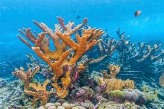
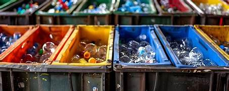
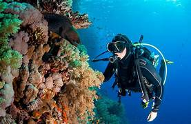

Detalles de Nuestras Operaciones de Campo
Convertimos la contaminación en materia prima para la economía circular.

Enfoque Estratégico en Alto Riesgo
No limpiamos al azar. Utilizamos datos satelitales y reportes de campo para concentrar nuestros esfuerzos en desembocaduras de ríos, manglares y arrecifes de coral que actúan como trampas de plástico.
Máxima eficiencia para proteger ecosistemas críticos.

Clasificación Meticulosa en Origen
Cada pieza de desecho se clasifica y separa en campo (PET, HDPE, LDPE, redes) antes de su transporte. Esto **maximiza la pureza** de la materia prima y garantiza la calidad de los productos de nuestra tienda.
El 85% del material recolectado es apto para reciclaje.

La Batalla contra las Redes Fantasma
Las redes de pesca abandonadas son responsables de la muerte continua de fauna marina. Nuestros equipos de buceo están certificados para remover estas redes de los arrecifes, un material que luego se convierte en nuestras Tote Bags y accesorios resistentes.
Protección directa de tortugas, delfines y corales.
Estadísticas de Impacto (Acumulado)
¡Únete a la Próxima Misión!
Tu ayuda es vital. Regístrate en nuestra plataforma y sé parte de la acción.
Ver Calendario y Registrarse